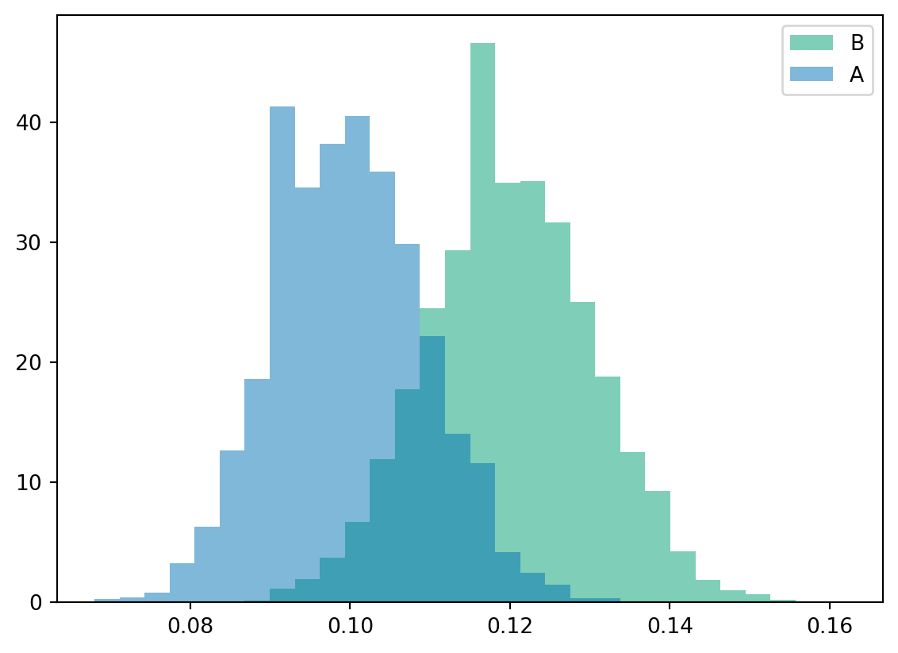

How good are we in detecting a difference? \(\mathrm{Pr}\{\text{reject}\mid \Delta > 0\}\)
Depends on:
sample size
effect size
variance
significance level
For example, with \(n=1000\), this is how often we actually detect a difference:
n =1000means = []effects = [] for _ inrange(5000): A = np.random.binomial(1, 0.1, n) B = np.random.binomial(1, 0.12, n) stat, p = proportions_ztest([A.sum(), B.sum()], [n, n]) means.append([A.mean(), B.mean()]) effects.append(p <0.05)means = np.array(means)np.mean(effects)plt.figure()plt.hist(means, density=True, bins=30, histtype='stepfilled', alpha=0.5)plt.legend(["B", "A"])

Multiple metrics problem (Multiple testing)
Real experiments track:
conversion
engagement
retention
revenue
Or, the experiments test more than two groups at a time.
Testing many metrics increases false positives.
Common remedies
Bonferroni correction, \(\frac{\alpha}{m}\): controls Family-wise error rate: makes the chance of any false positive small.
Benjamani-Hochberg (BH), \(\frac{i \alpha}{m}\): controls False discovery rate: out of the “significant” results, keep the expected proportion of false positives small.